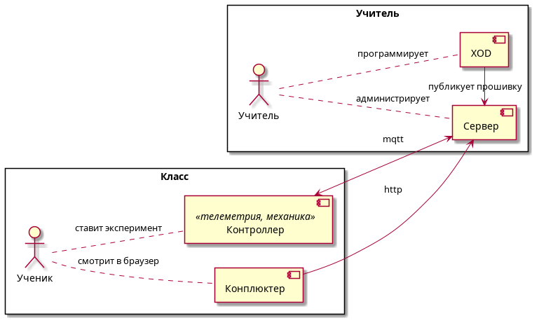
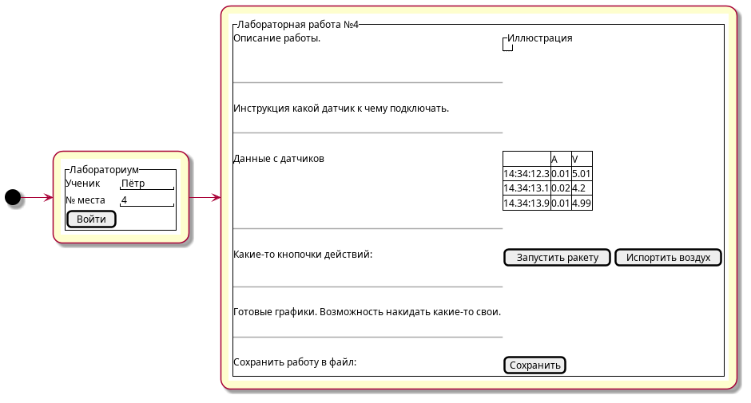

Нажми на play, чтобы включить электродокладчика ⬇
(мы додумали)


/firmware/id требуемую прошивку/firmware/url/cfg/ctl/.../sensor/tempДоступ в интернет требуется только для XOD - установка платформ и библиотек, затем - запуск симуляций. Сам учебный процесс полностью автономен.
¯\_(ツ)_/¯